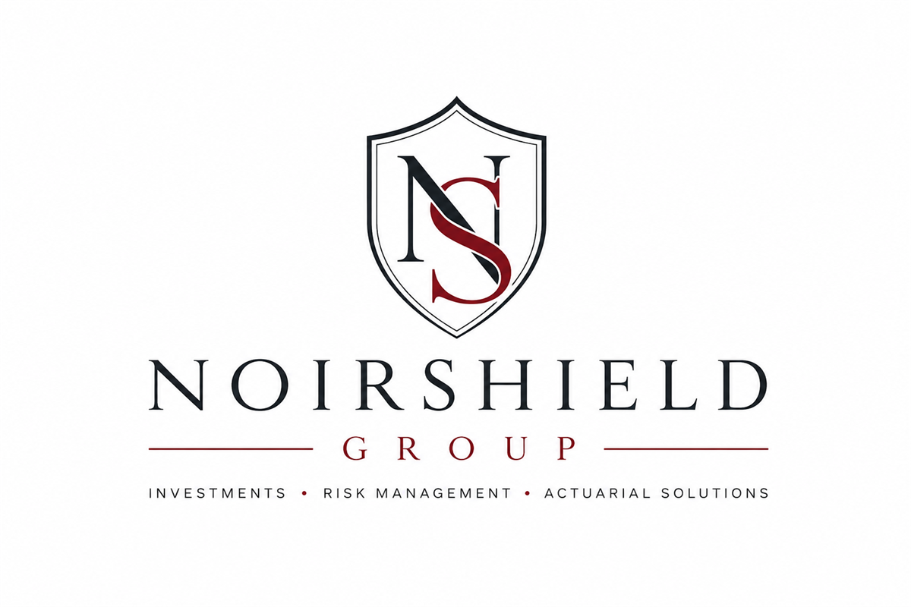

Founder · Operator · Quantitative researcher
Building NoirShield Group with quantitative discipline.
Junior Hernandez Paulino is the founder of NoirShield Group, the public umbrella brand for an operating and ownership platform associated with residential real-estate operations in New York and Florida, developing operating ventures, internal capital allocation, and long-term risk management. The associated two-property real-estate asset base carries a combined gross public market estimate of approximately $1.35 million as of August 2026.


Business and ownership platform
NoirShield Group
NoirShield Holdings & Management represents the active operating platform across real estate, rental operations, property oversight, capital improvements, development coordination, and administrative infrastructure. The approximately $1.35 million figure is a rounded, unaudited gross public market estimate for two associated residential assets; it is not a personal or company equity figure, and debt, liens, taxes, ownership interests, and transaction costs have not been deducted.
NOIRDaycare is in its final pre-opening buildout, NoirShield Capital is being developed for internal capital allocation, and a future NoirShield captive remains a long-term regulated objective. The captive is not formed or licensed and offers no insurance products or services.
See the complete group structureQuantitative and professional foundation
As a Handshake AI domain expert, Junior develops prompts and test cases, designs scoring rubrics, performs quantitative QA, classifies model failures, and writes reproducible feedback across economics, finance, mathematics, and actuarial-style risk. The work requires technical judgment, adversarial testing, and strict confidentiality.
His actuarial work includes the CAS Student Central Summer Program and a personal-auto pricing case study covering claim frequency, claim severity, pure premiums, model validation, aggregate-loss simulation, VaR, and TVaR. The work draws on probability, statistics, regression, financial mathematics, Python, R, SQL, and Excel.
Across two Federal Reserve Challenge cycles, a merit-based Lehman financial research scholarship, Oracle’s REACH apprenticeship, and Stout’s winning Future Leaders in Finance team, Junior has converted complex evidence into recommendations that can be questioned, defended, and used.
Junior studies economics and mathematics at Lehman College with a minor in actuarial mathematics. He is preparing for actuarial Exams P and FM and pursuing opportunities in actuarial analysis, insurance pricing, model evaluation, quantitative research, and risk analysis while continuing to develop the NoirShield platform.
Professional principles
- Evidence before assertion. Assumptions and limitations should be visible.
- Clarity before complexity. A model is useful only when its result can be explained and challenged.
- Long-term discipline. Sustainable business value comes from risk control, sound governance, and consistent execution.